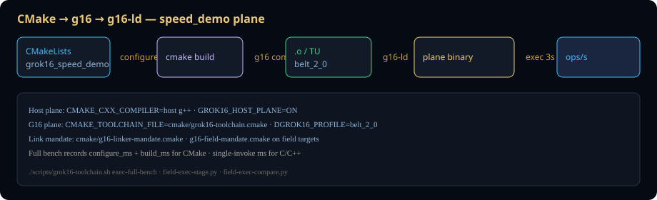

Versioned compile+exec benchmark on identical speed_demo kernel. Python = interpreter (~0.8M ops/s). C/C++ = chamber compile ahead, not line-by-line interpretation.
Full speed bench manual → · Host: default-X870-Pro-RS · 2026-06-27T03:02:28Z



| Doc | For engineers who need… |
|---|---|
| Speed Bench | Versioned compile ms + execution ops/s — report v3.0.0 |
| Uncompiled | Python interpreter, chamber compile-ahead, Queen .launch |
| CMake & Linking | Toolchain file, speed_demo CMake, g16-ld mandate |
| Release 3.0 | 3.0 changelog, upgrade from v2.0.0 |
| Single Fabric | 2.0 technology — one belt die, one field amplitude |
| Safety | Depth-field impossible, linear time, Ironclad gates |
| Getting Started | Bootstrap, rebuild modes, first verify |
| Architecture | Forge pipeline, unified driver, directories |
| Batteries | Validation tiers, CI gate, failure triage |
| Linker | g16-ld, 16 targets, mandate flags |
| Performance | Belt triad + speed bench suite |
| Reference | Commands, env vars, manifest paths |